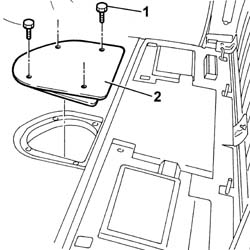
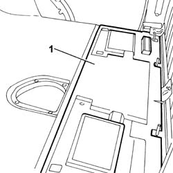

7040L18 PASSENGER COMPARTMENT FLOOR REAR CARPET - R R
- Path
- Procedures > 70 FITTINGS > 7040 BODY INTERIOR FITTINGS AND TRIM > 7040L CABIN FLOOR COVERING > 7040L18 PASSENGER COMPARTMENT FLOOR REAR CARPET - R R
- Kind
- repair procedure (removal / refitting; the operation number is the code)
- Applies to
- all engines; all production periods
- Interactive page
- https://sloeber94.github.io/elrnDB-fDct/en/#/244001527
Applies to: all engines; all production periods
 Removing
Removing
 Refitting
RefittingOp. 7040L56 FRONT PASSENGER DOOR HOUSING RUNNING BOARD - R.R.
Op. 3380A10 HANDBRAKE LEVER - R+R
Op. 7040L54 DRIVER'S FRONT DOOR HOUSING RUNNING BOARD - R.R.
Op. 7045A11 DRIVER'S FRONT SEAT WITH HANDBRAKE LEVER - R.R.
Op. 7045A12 FRONT PASSENGER SEAT(S) - R.R.
-
1. Undo the bolts fixing the reservoir inspection cover.

Applies to: all engines; all production periods
- Remove the press-fit button fixing the rear carpet using the tool indicated.
 | Description | Code | Function |
|---|---|---|---|
. | Knife | 1.878.077.000 | Removing press-fittings |
1. Remove the rear carpet.

Applies to: all engines; all production periods
Refitting
Removing- Position the rear carpet.
- Secure the carpet using the press-fit button.
- Fasten the reservoir inspection cover tightening the fixing bolts.
Op. 7045A12 FRONT PASSENGER SEAT(S) - R.R.
Op. 7045A11 DRIVER'S FRONT SEAT WITH HANDBRAKE LEVER - R.R.
Op. 7040L54 DRIVER'S FRONT DOOR HOUSING RUNNING BOARD - R.R.
Op. 3380A10 HANDBRAKE LEVER - R+R
Op. 7040L56 FRONT PASSENGER DOOR HOUSING RUNNING BOARD - R.R.